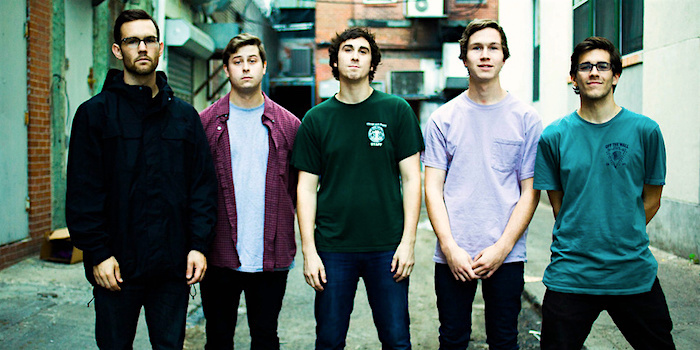
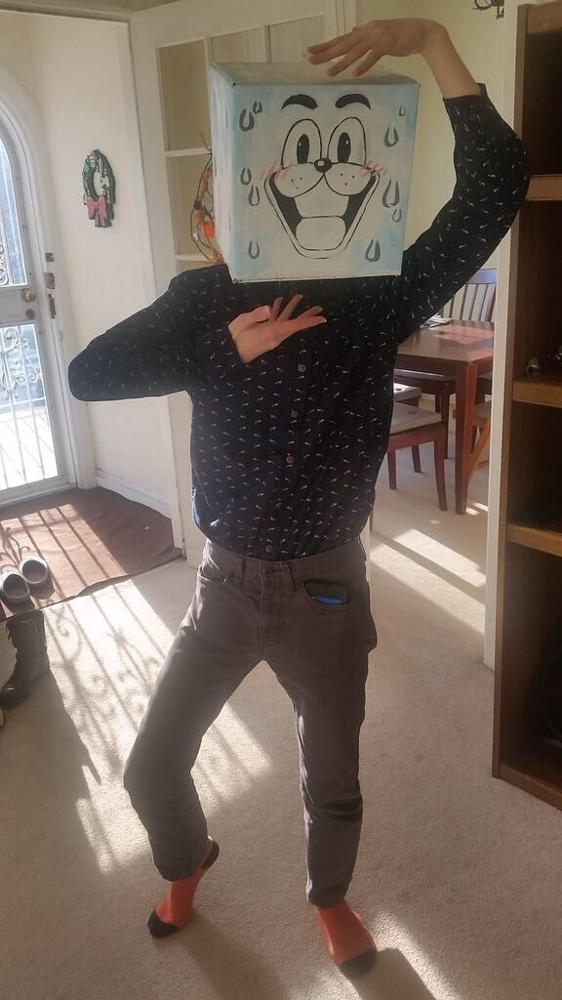
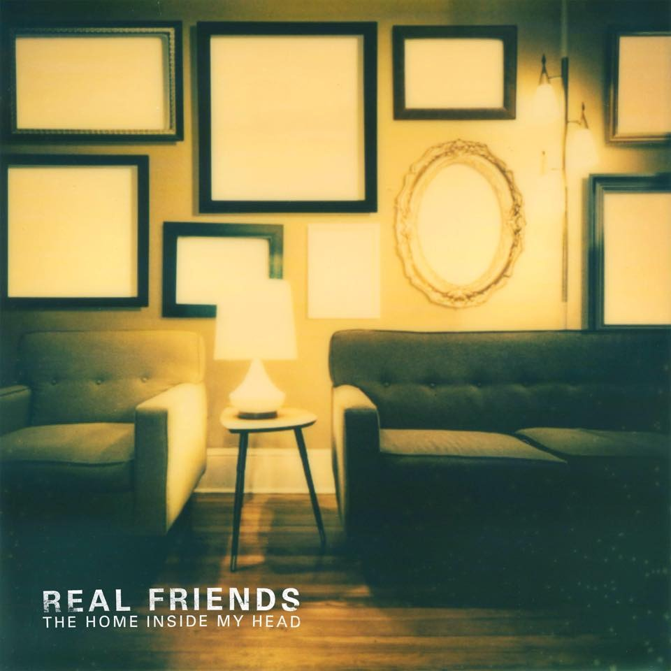
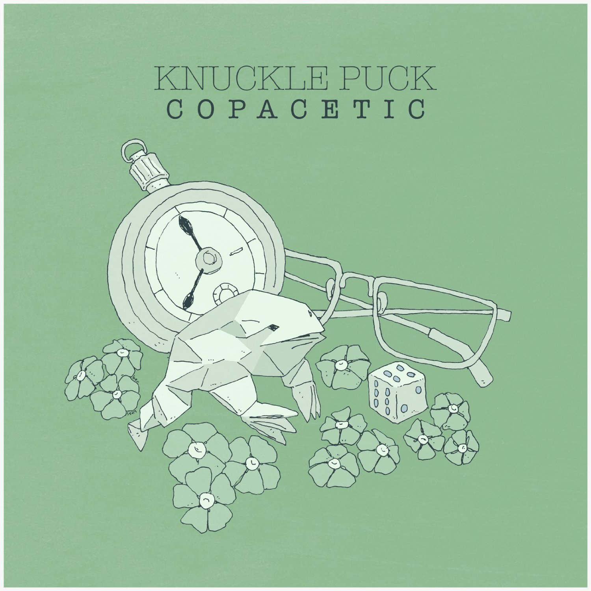
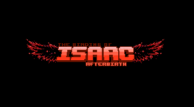

Links:Email
Hey, how's it hanging? This is where you can find out some more about my Youtube channel. This is my personal webpage as well, where you can learn some information about me. I'm a freshman at the University at Buffalo, intended Computer Science major, and I work at Tops as a cashier. I've lived in Cheektowaga, about 20 minutes away from campus, for the past 10 years and I lived in South Buffalo before then. I play vidya games sometimes, I'm into pop punk, and I like writing occasionally. There you go. All the basic filler info you need about me. Catch you later.
So yeah, I run the Youtube channel knucklebump557. There, you can find a bunch of different kinds of videos. These can be LP's (let's plays) of video games, commentaries, discussion-type videos, "reviews", skits, countdowns, and more. Overall, it's just a bunch of fun and I highly encourage you all to go check it out as soon as you can. New content is being uploaded as soon as I can make it, so just bear with me on that. I promise you won't regret it
Heya. Welcome to my personal website. I'm creating this for CSE 199, in the Fall term of 2016. Pretty easy final project if you ask me. I've designed multiple web sites before, in classes I took in high school. So this should be pretty simple. Give me some feedback, would ya? Or don't, I really don't care one way or the other. Either way, settle in and enjoy the thrill ride that is this web site, and accompanying Youtube channel. It'll be great, I promise.
Ryan Chester Nobleworth Bottomton was born in the year 1876...
Nope. I was born here in Buffalo in '98. Guess that makes me a 90's kid, but also a millenial. How...I don't know. I lived in South Buffalo for about 7 years of my life, but the place was a craphole. Mind you, I didn't care at the time, I was a kid. I had no standards. But see...the neighborhood wasn't exactly the uh, "safest", I guess you could say. It was a miracle we went to a good school. So, in 2006, we packed our things and moved out to Cheektowaga, about 20 minutes away from campus. Now, I'm not gonna say that where we moved was perfect. Nothing's perfect. But it's leagues better than anywhere I had lived before. And it's where we've been for the last 10 years.
So something's gotta be right, I guess.
I'm an intended CS major. I like programming, but web design is my thing. I like sitting down and putting together web sites, being as creative or expressive as I want with no limits. Or just making a complete joke or mockery of whatever I have to or want to. I'm interested in seeing where my studies will be taking me in the field, where I'll go, what I'll do. But one thing's for sure. This has been Step One of college.
So yeah, I like music, and computers, and programming, and games...and stuff. Here's some of the things I'm currently into:
Bands/Artists |
||
Real Friends |
Knuckle Puck |
Toby Fox |
|  |  | |
Albums |
||
The Home Inside my Head |
Copacetic |
Undertale |
|  |  |  |
Games |
||
The Binding of Isaac |
Bioshock |
Hotline Miami |
|  |  |
 |
So, yeah. I think that's everything really. That's a bit about me, some interests and stuff. I left some links up at the top and below this text in case you ever want/need to get into contact with me. I put down my email, my Twitter, my Tumblr, and my Facebook. Browse if interested, it's your choice really. Hope you enjoyed this web page. And I hope you enjoy the channel even more *wink *wink*
Now get out of here.
Links:Email